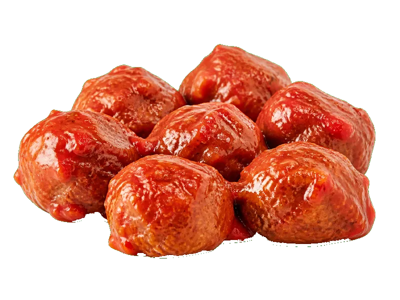

Polskie obiadki
Klopsiki w sosie pomidorowym
Klopsiki w sosie pomidorowym: 12 g białka, 155 kcal, 8 g węglowodanów i 9 g tłuszczu na 100 g. Kategoria: Polskie obiadki.
Kalorie155 kcalna 100 g
Białko / proteiny12 g
Węglowodany8 g
Tłuszcz9 g
Cena (szac.)~1,56 złza 100 g
Ceny zaktualizowano: maj 2026 (szacunek — ceny w popularnych supermarketach)
Porcja: porcja (250g)
| Kalorie | 388 kcal |
|---|---|
| Białko | 30 g |
| Węglowodany | 20 g |
| Tłuszcz | 22.5 g |
| Cena (szac.) | ~3,89 zł |
Szczegółowe składniki odżywcze na 100 g
| Wartość energetyczna (kalorie) | 155 kcal |
|---|---|
| Białko (proteiny) | 12 g |
| Węglowodany | 8 g |
| Tłuszcz | 9 g |
| Tłuszcze nasycone | 3.5 g |
| Tłuszcze nienasycone | 5.5 g |
| Witaminy i minerały (skrót) | Witamina C, Selen, Fosfor |
| Współczynnik kcal / 1 g białka | 12.9 |
| Cena produktu (szac. za 100 g) | ~1,56 zł |
| Cena za 100 g białka (szac.) | ~12,97 zł |
Witaminy i minerały na 100 g
Ilość w 100 g produktu oraz orientacyjny % dziennego zapotrzebowania (RDA) dla dorosłej osoby. Żelazo wg normy dla kobiet; sód jako % limitu. Wartości typowe (USDA / tabele żywieniowe / etykiety) — mogą się różnić między markami.
-
Witamina A 42 µg
-
Witamina C 14 mg
-
Witamina K 7.9 µg
-
Witamina B1 (tiamina) 0.15 mg
-
Witamina B3 (niacyna) 2 mg
-
Witamina B9 (foliany) 15 µg
-
Witamina B12 0.3 µg
-
Wapń 40 mg
-
Żelazo 1.2 mg
-
Magnez 20 mg
-
Fosfor 100 mg
-
Potas 237 mg
-
Cynk 1 mg
-
Selen 8 µg
-
Miedź 80 µg
-
Mangan 0.2 mg
-
Sód 400 mg